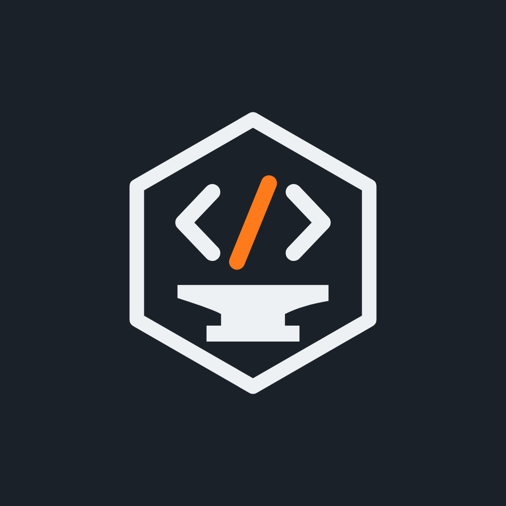

Paleta
Acero y brasa. Un fondo frío y oscuro, texto claro, y el naranja de la barra al rojo como único acento: solo en lo que tiene que llamar la atención (el botón de WhatsApp, una palabra clave, el detalle del logo). Nunca como fondo de textos largos.
Los números son el contraste sobre el fondo acero: todos pasan el nivel AA. Sobre un fondo claro se usa la brasa oscura. Los valores exactos están en brand/tokens.json.
Tipografías
Dos familias gratuitas de Google Fonts.
Archivo condensada
Para títulos y el logo: Archivo, ancho 70, peso 800 y en MAYÚSCULAS. Fuerte y compacta, como una pieza de metal.
Public Sans para todo lo que se lee: textos, botones, listas y precios.
Pesos 400 (texto), 500 (destacados) y 700 (botones). Clara y neutra, para que se lea sin esfuerzo en el celular.
Logo
Un yunque del herrero forjando código (</>), dentro de un hexágono que es a la vez una tuerca de taller. La barra del medio va al rojo: es lo que se está forjando.

Símbolo solo
Foto de perfil (Instagram y WhatsApp)Archivos
brand/logo/: logo.svg, logo-1color.svg, simbolo.svg, simbolo-chico.svg (para 16 a 48 px). brand/export/: los PNG de cada plataforma. Para regenerarlos: node brand/trazar-logo.mjs (logo, si cambia el nombre) y node brand/export.mjs (PNG).
Usos correctos
Usos incorrectos
Tono de voz
El de siempre: español rioplatense con voseo, cercano pero profesional. La marca habla como Matias hablaría con un cliente por WhatsApp.
La metáfora del herrero, con medida
"Forjada a medida", "hecha con oficio" y "nada de plantillas" funcionan. No hace falta explicar la mitología en cada pieza: el símbolo ya lo cuenta.